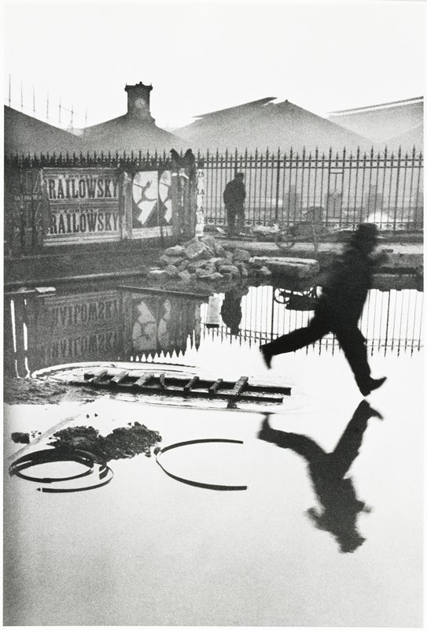

Behind the Gare Saint-Lazare, Paris
Henri Cartier-Bresson · 1932 · Gelatin silver print · 57.6 × 39.1 cm (image) · Minneapolis Institute of Art
In copyright. Look and learn: shown for study, not for download.
Henri Cartier-Bresson made this frame at the Place de l'Europe, just outside the Saint-Lazare station in Paris, with a portable Leica. He was shooting through a gap in a plank fence around some repairs, and the gap was too narrow for his lens, so the left edge was cut off; it is one of the few pictures he cropped. It was shown at the Julien Levy gallery in New York in 1933. A print sold at Christie's in 2011 for $590,455.